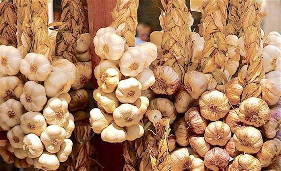

Ail blanc
de Lomagne


⟹ Produits du Terroir ⟸
L’ail blanc de Lomagne est le « grand cru » des aulx français. Cultivé sur les coteaux de la Lomagne, pays vallonné à cheval sur le Tarn-et-Garonne et le Gers, il se reconnaît à ses gros bulbes d’un blanc à blanc ivoire, parfois zébrés d’une flamme violette, à ses caïeux réguliers et à sa saveur à la fois puissante et douce.

L’ail est cultivé en Lomagne depuis des siècles, d’abord dans les potagers familiaux puis en plein champ. Les sols de terreforts argilo-calcaires et les étés chauds et secs conviennent parfaitement à cette plante, qui y développe des bulbes denses et de longue conservation. Dès le XIXe siècle, les statistiques agricoles soulignent l’importance du revenu que le canton de Beaumont tire de son ail.
Au XXe siècle, la culture se développe à grande échelle. Beaumont-de-Lomagne, bastide fondée au XIIIe siècle, devient la capitale de l’ail : à partir de 1936, un marché spécialisé se tient dans les rues du centre, autour de l’église. À son apogée, la Lomagne assure près d’un quart de la production nationale d’ail, et son marché fixe les cours pour toute la France.
Les producteurs entretiennent un savoir-faire largement manuel : plantation des caïeux à l’automne et en hiver, arrachage en juin-juillet, séchage naturel, puis épluchage, calibrage et confection des présentations traditionnelles. Les tresses et les manouilles (bottes de têtes liées par leurs tiges) sont encore réalisées à la main.
Pour protéger la réputation de leur produit, les producteurs et expéditeurs créent l’Association de défense de l’ail blanc de Lomagne et obtiennent, après sept ans de démarches, l’Indication géographique protégée en 2008. L’IGP est issue des variétés traditionnelles « Blanc de Lomagne » et couvre plusieurs dizaines de communes du Gers et du Tarn-et-Garonne.
Le cahier des charges encadre la sélection des semences, le choix des parcelles, le séchage et la présentation. Chaque lot est contrôlé visuellement avant d’être trié et calibré. Le goût est caractéristique : piquant et persistant cru, il devient moelleux et doux une fois cuit en chemise, ses arômes s’arrondissant à la cuisson.
Cru, il est vif et franc ; cuit en chemise, il devient fondant et presque sucré : l’ail blanc de Lomagne change de caractère selon la façon dont on le cuisine.
Tradition culinaire lomagnoleDepuis 1995, la Fête de l’ail blanc de Lomagne réunit chaque fin juillet des milliers de visiteurs à Beaumont-de-Lomagne, sous la superbe halle médiévale du XIVe siècle. Au programme : marché de producteurs IGP, démonstrations de tressage, concours de tourin (la soupe à l’ail), « mondial » des éplucheurs d’ail et grand repas de mille couverts.
L’ail blanc de Lomagne est indissociable de la cuisine du Sud-Ouest : il parfume le tourin blanc, les pommes de terre sautées à la graisse de canard, les confits, les magrets et le célèbre chabrot. Il est aussi apprécié pour ses vertus santé, longtemps célébrées par la médecine populaire.
Conservez l’ail dans un endroit sec, aéré et à l’abri de la lumière, jamais au réfrigérateur : une tresse suspendue dans la cuisine est la meilleure solution.
Le conseil de la ficheTresse : têtes d’ail tressées à la main par leurs tiges sèches, présentation emblématique de la Lomagne.
Manouille : bouquet de têtes d’ail liées par leurs tiges coupées courtes, facile à suspendre.
Ail en vrac ou en filet : têtes calibrées et triées, vendues en sacs, filets ou plateaux, avec l’étiquette IGP.
Ail rôti en chemise : gousses non épluchées cuites au four ou dans la graisse, fondantes et sucrées.
Ail confit : gousses cuites lentement dans l’huile ou la graisse de canard, à tartiner sur du pain grillé.
La nouvelle récolte d’ail blanc de Lomagne arrive sur les étals fin juillet. Bien conservé, il se garde jusqu’au printemps suivant.
Beaumont-de-Lomagne capitale de l’ail blanc, siège de nombreux expéditeurs et de l’ancien marché à l’ail ; sa halle médiévale du XIVe siècle accueille la fête annuelle.
Fête de l’ail blanc fin juillet à Beaumont-de-Lomagne : marché de producteurs IGP, tressage, concours de tourin et repas géant.
Larrazet et les villages de Lomagne producteurs en vente directe à la ferme, ail, échalotes et oignons.
Montauban et Castelsarrasin marchés hebdomadaires où les producteurs lomagnols vendent tresses et manouilles.
Lectoure et Fleurance (Gers) côté gersois de l’aire IGP, autres places fortes de la Lomagne.